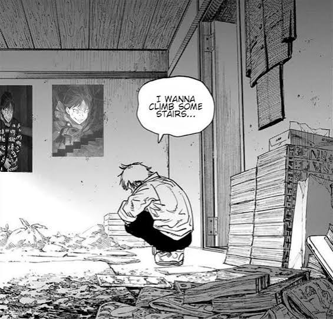

The Stink
Subaru Natsuki takes the concept of an "aura monster" to a hilariously literal extreme, radiating a presence that is rivaled only by his atrocious, supernatural body odor. Every time he utilizes Return by Death, he accumulates an increasingly potent dose of the Witch’s Scent—a foul, dark-magic stench that smells like raw misfortune to anyone sensitive enough to pick it up. While modern internet culture treats an aura monster as someone oozing unshakeable confidence or chaotic energy, Subaru’s aura is practically a biohazard that drives mabeasts wild and makes characters like Rem and Garfiel recoil in sheer disgust. He may eventually pull off legendary, high-aura feats, but there's no denying that his most overwhelming presence is a magical odor so severe it could strip the paint off a wall.

Happy Birthday Daniel
The "Happy Birthday Daniel" meme is one of the internet’s favorite absurd celebration traditions, turning a standard birthday wish into a relentless barrage of surreal humor. Spurred by viral voice clips, iconic soundbites, and chaotic edit culture, the meme revolves around showering the elusive "Daniel" with aggressive enthusiasm, ridiculous background tracks, and bizarre visual edits. It quickly transcended its original video origins to become a universal inside joke across TikTok, YouTube, and fandom communities—frequently spliced into anime edits where characters are inexplicably dragged into the relentless festive madness. At this point, Daniel isn't just a guy celebrating another trip around the sun; he's an internet legend perpetually trapped in a hilarious, inescapable cycle of eternal birthday hype.

Jealousy
Daniel’s aura is so impossibly immaculate and transcendent that the rest of humanity is locked in a collective, perpetual state of pure envy. He moves through the world with an effortless, god-tier energy that instantly turns world leaders, pop icons, and main characters into background extras, bleeding raw aura points every time he takes a step. It’s an intoxicating blend of unbothered chill and cosmic clout—the kind of presence that can't be bought, practiced, or faked, leaving everyone else trying (and embarrassingly failing) to match his wave. People spend their entire lives grinding for a fraction of his unspoken swagger, but Daniel commands the global stage simply by existing, driving the world mad with jealousy over a guy who didn't even have to try to become an absolute legend.